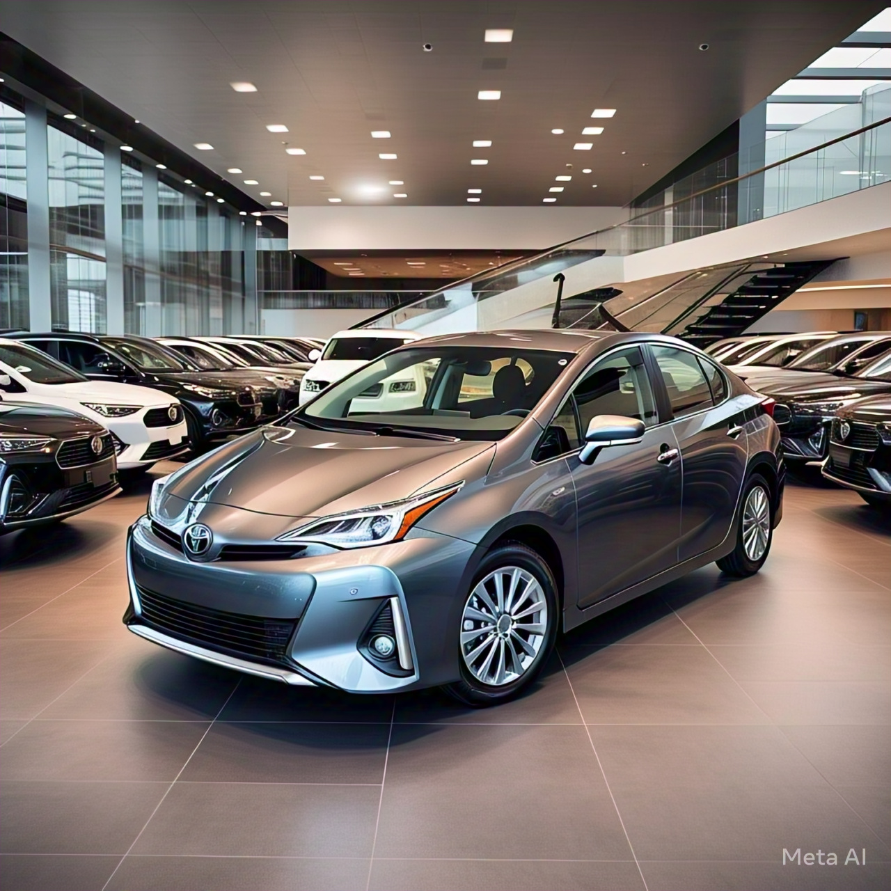

Productos
Toyota Corolla
Un clásico entre los sedanes, conocido por su fiabilidad, eficiencia de combustible y durabilidad. Ideal para quienes buscan un vehículo económico y práctico.
Desde $88,000,000 COP
Toyota Hilux
Camioneta robusta, perfecta para trabajos pesados y aventuras fuera de la carretera. Famosa por su resistencia y capacidad de carga.
Desde $120,000,000 COP
Toyota Camry
Sedán de tamaño mediano que destaca por su confort, tecnología avanzada y eficiencia de combustible. Ideal para viajes largos y uso diario.
Desde $104,000,000 COP
Toyota RAV4
SUV compacto que combina espacio, versatilidad y eficiencia de combustible. Perfecto para quienes necesitan un vehículo familiar y práctico.
Desde $112,000,000 COP
Toyota Tacoma

Camioneta mediana popular por su durabilidad y rendimiento todoterreno. Ideal para quienes buscan aventura y capacidad de carga.
Desde $106,000,000 COP
Toyota Prius
Pionero en autos híbridos, el Prius es famoso por su eficiencia de combustible y bajo impacto ambiental. Perfecto para conductores conscientes del medio ambiente.
Desde $100,000,000 COP
Toyota 4Runner
Un SUV de tamaño completo, conocido por su fiabilidad y capacidades todoterreno. Ideal para viajes de aventura y terrenos difíciles.
Desde $148,000,000 COP
Toyota Yaris
Un vehículo compacto y accesible, perfecto para la ciudad. Ofrece eficiencia de combustible y facilidad de manejo en entornos urbanos.
Desde $76,000,000 COP
Toyota Land Cruiser
Un SUV de lujo y alto rendimiento, conocido por su fiabilidad y capacidad para enfrentarse a los terrenos más difíciles. Ideal para quienes necesitan un vehículo todo terreno.
Desde $340,000,000 COP